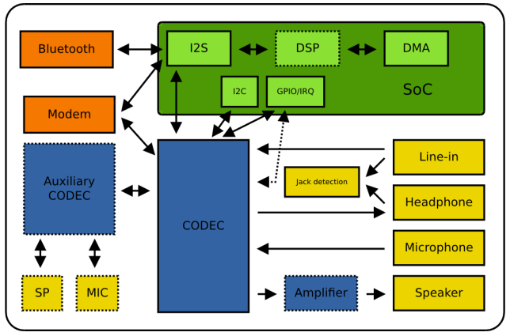

Audio in Linux
ALSA
Advanced Linux Sound Architecture (ALSA) is a software framework and part of the Linux kernel that provides an application programming interface (API) for sound card device drivers.
The project to develop ALSA was led by Jaroslav Kysela, and it started in 1998 and was developed separately from the Linux kernel until it was introduced in the 2.5 development series in 2002. In the 2.6 version, ALSA replaced the previous system, Open Sound System (OSS), by default (although a backwards-compatibility layer does exist).

Figure. A block diagram for ALSA in Linux
ALSA concept
*TBD
ASoC
The ASoC (ALSA System on Chip) layer aims to provide better support for ALSA on embedded systems that use a system-on-chip (SoC) design.
The codec class driver is platform independent and contains audio controls, audio interface capabilities, codec DAPM definition and codec IO functions.
The platform class driver includes the audio DMA engine driver, digital audio interface (DAI) drivers (e.g. I2S, AC97, PCM) and any audio DSP drivers for that platform.
The machine driver class acts as the glue that describes and binds the other component drivers together to form an ALSA "sound card device". It handles any machine specific controls and machine level audio events (e.g. turning on an amp at start of playback).
ALSA SoC Layer in Kernel Document.
For example with iMX8MQ and wm8960 Codec.
wm8960.c is ASoC Codec Class driver:
-
register a soc dai driver by calling:
snd_soc_register_codec. This DAI driver provides two streams: playback & capture. It also provides DAI operation such as mute, free... -
define mixers and audio paths by calling SOC_* macro.
imx-wm8960.c is ASoC Platform Driver.
ALSA Application
arecord & aplay
arecord -t raw -f S16_LE -c 1 output.raw
output.raw can be played by using aplay
aplay -f S16_LE output.raw
or extracted by a simple C program.
#include <stdio.h>
#include <sys/types.h>
#include <sys/stat.h>
#include <fcntl.h>
#include <unistd.h>
int main()
{
int16_t buf;
int fd = open("./input", O_RDWR);
if (fd < 0) {
printf("open file fail\n");
return 1;
}
while (read(fd, &buf, 2) > 0)
printf("%d\n", buf);
close(fd);
return 0;
}
Raw data
DAPM - Dynamic Audio Power Management
Modern sound cards consist of many independent discrete components and each component has functional units that can be powered independently.

Figure. Anatomy of a modern sound card (Lars-Peter Clausen – Analog Devices)
What is DAPM?
DAPM is model data flow and power dependencies in a directed graph. Each node in graph represents a functional unit (called widget). Route or Path represent connections between functional units.
Eache widget (node) has a type and this type defines how the widget behaves in the graph. E.g. Speaker, Microphone, Amplifier, DAC, ADC, internal supply, external supply, headphone output, line-in input, line-out output, audio interface, audio interface link, mixer, mux, input pin, output pin ...
How DAPM works?
DAPM operation has two phases:
- Phase 1: Determine target power state
- Phase 2: Power sequencing
In phase 1, finding out the power state DAPM differentiates between three different categories of widgets: Enpoint widgets, Pass-through widgets, Supply widgets.
Power state of eache widget in graph is determined.
After Phase 1, target power state is determined. Widgets in graph is powered.
- Power-down all newly disabled widgets
- Perform routing changes (if any)
- Power-up all newly enabled widgets
Case Study - WM8960
Macro for defining widgets can be found at /include/sound/soc-dapm.h.
DAPM widgets in wm8960.c fall into a number of types:
-
Stream Domain Widgets: ADCs (analog to digital converters), DACs (digital to analog converters).
SND_SOC_DAPM_ADC("Left ADC", "Capture", WM8960_POWER1, 3, 0), SND_SOC_DAPM_ADC("Right ADC", "Capture", WM8960_POWER1, 2, 0), SND_SOC_DAPM_DAC("Left DAC", "Playback", WM8960_POWER2, 8, 0), SND_SOC_DAPM_DAC("Right DAC", "Playback", WM8960_POWER2, 7, 0), -
Path Domain Widgets: Path domain widgets have a ability to control or affect the audio signal or audio paths within the audio subsystem
SOC_DAPM_SINGLE("Left Switch", WM8960_MONOMIX1, 7, 1, 0), SOC_DAPM_SINGLE("Right Switch", WM8960_MONOMIX2, 7, 1, 0),
Machine Widgets appears in imx-wm8960.c. A machine widget is assigned to each machine audio component (non codec or DSP) that can be independently powered. e.g Microphone Bias, Jack Connectors. In iMX8-MQ, machine widget and codec widget interconnections are defined in device tree:
audio-routing =
"Headphone Jack", "HP_L",
"Headphone Jack", "HP_R",
"Ext Spk", "SPK_LP",
"Ext Spk", "SPK_LN",
"LINPUT1", "Main MIC",
"LINPUT2", "Main MIC",
"RINPUT1", "Mic Jack",
"Mic Jack", "MICB",
"Main MIC", "MICB",
"Playback", "CPU-Playback",
"CPU-Capture", "Capture";
Headphone Jack, Ext Spk, Main MIC, Mic Jack are machine widgets.
Physical interface definitions
I2S - Inter IC Sound
What is I2S? and What is I2S used for?
I2S - Inter IC Sound is an electrical serial bus interface standard used for connecting digital audio devices together. This standard was introduced in 1986 by Philips Semiconductor (now NXP Semiconductors) and was last revised on June 5, 1996.
What is I2S made from?
Figure. I2S Bus Timing from I2S standard by Philips Seminconductors
The bus consists of at least three lines:
- Bit clock line: Officially "continuous serial clock (SCK)".[1] Typically written "bit clock (BCLK)".[2]
- Word clock line: Officially "word select (WS)".[1] Typically called "left-right clock (LRCLK)"[2] or "frame sync (FS)".
- 0 = Left channel
- 1 = Right channel
- At least one multiplexed data line
Officially "serial data (SD)",[1] but can be called SDATA, SDIN, SDOUT, DACDAT, ADCDAT, etc.[2]
What kind of data is transfered in I2S?
Digital Audio Data e.g. PCM
SAI - Synchronous Audio Interface
Synchronous Audio Interface or Serial Audio Interface? It is quite hard to find definition for SAI in Internet. So, it will be defined by using an example from NPX IMX SoC.
In IMX8M, NXP integrates an audio module called SAI/I2S. This module which is platform device (has its own address in CPU memory map) will receive audio data from external CODEC and transfer these data to CPU. It supports I2S bus standard.

DAI - Digital Audio Interfaces
ASoC currently supports the three main Digital Audio Interfaces (DAI) found on SoC controllers and portable audio CODECs today, namely AC97, I2S and PCM (PCM means a kind of bus, not a type of digital audio data).
References
[1] DAPM - Analog Device - Lars-Petter Clausen.